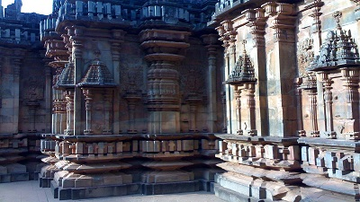
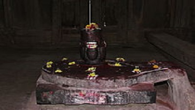
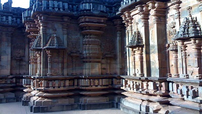
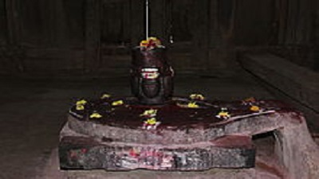

Chandramouleshwara Temple
History
Chandramouleshwar is estimated to be a 900-year-old temple from the Badami Chalukyan era. Chalukyas built this temple in the 11th - 12th century. It was built on the lines of Badami, Aihole and Pattadakal temples. Fables say that the Chalukyans wanted to boast their architectural prowess and wealth to their enemies. To do so, the Chalukyans commissioned anonymous artisans to build this temple overnight. But, the artisans couldn't complete the work within a night and the temple structure remains incomplete. According to some folklore, the sculptor Jaknacharya and his son built this temple. It is a Monument of National importance and is designated as a Protected Monument under the Ancient Monuments and Archaeological Sites Act (1958) by Archaeological Survey of India (ASI). • Unlike other Shiva temples in the North Karnataka region, the garbhagriha of the Chandramouleshwar Temple has four doors in all the four directions. The pradakshina path has four entrances. The mukhyamandapa too has four entrances, altogether accounting for twelve doors in the temple. • One of the two lingams is the 'Chaturmukha Lingam', a four-faced Shiva lingam, is a unique feature of the temple.
 



Temple overview
The Chandramouleshwar Temple in Hubli City, Unkal area ,is a 900 year old temple built during the Badami Chalukyan era. It is situated near Unkal circle, Unkal Lake. Unkal is an area in the Hubli-Dharwad municipality in Karnataka. It is on old Pune – Bangalore highway NH4, about 3 km north of Hubli city centre. The beautiful, natural, scenic Unkal Lake is located in this area. It is a good picnic spot and a must-visit place.
The Chandramouleshwar temple is dedicated to lord Shiva. It houses two big Shivalingas. The main shrine has four entrances in all the four directions. The presiding deity of the shrine, Lord Chandramouleshwar faces east. The other Linga is known as Chaturmukha Linga, literally meaning the four faced Linga. The temple remains open from sunrise to sunset.
Nearby surrounding’s
Unkal Lake is one of the water sources of Hubli-Dharwad and a picnic spot. Unkal Lake has a boating facility.kal lake in the evening Unkal lake is the origin of river Bedti. This river flows through the western ghats and drains in Arabian sea. Also, Bedti river joins Shalmala river near Kalaghatagi and together they flow as river Gangavali. Origin of river Shalmala is Someshwara temple Dharwad.
The President Hotel, Hubli, is a luxury property overlooking Unkal Lake. Located close to the Unkal Railway Station,
Architecture of Chandramouleshwara Temple
The temple has unfinished architecture, yet the most marvelous and a spectacular architecture by the
Chalukyas. The unfinished temple has many quarters that have left half way done yet a visual
delight.
The temple is constructed in the Chalukyan era and is clearly inscribed in stones which belong to the
12th century in the Unkal village. The temple is designed in black granites. It has alluring sculptures
and appealing carving that attracts many art lovers to the temple.
Chandramouleshwara temple has two shiva lingas out of that one of them is the ‘Chaturmugha Linga’ which
is the four faced Shiva linga, one of the features that make the temple stand out among the various Lord
Shiva temples in the state.
Another spectacular feature of the temple architecture is the dancing Lord Ganesh and the Jaladhara
images on the walls of the temple. Devotees come to worship Lord Shiva here. Mondays being a special day
dedicated to Lord Shiva, the temple receives numerous devotees who offer milk, curd, and sweets to the
Lord to seek blessings.
The sthapathi or the sculptor of the temple could not finish the temple before the day-break, hence the
temple was left half done. The wall height is around 20-25 feet out of which half of the temple is made
of red stones while the other half is made of green stone, giving the temple an overall remarkable look.
The temple is located on a raised place. The chancel of the temple contains four-faced Shiva linga.
Unlike any other Lord Shiva temple, the temple has four doors in all the possible directions and a total
of 12 doors.
Conservation and restoration
here is an urgent need of conservation and restoration of the Chandramouleshwar temple at Unkal
The temple premises serve as a playground for children and youngsters to play cricket. It has become a
victim of government apathy and urbanization. There is virtually no approach road to the temple. The
encroachments on all the four sides of the temple make it difficult to access by vehicle. The roads
leading to the temple are very small with arrack shops and other illegal trades. One has to cross rows
of houses and narrow lanes to reach Chandramouleshwar temple.
Archaeological Survey of India (ASI) had begun work on the temple premises very long back. It started work on a compound wall to prevent further encroachments, but this work too remains incomplete.
Details
Unlike other Shiva temples in the North Karnataka region, the garbhagriha of the Chandramouleshwar
Temple has four doors in all the four directions. The pradakshina path has four entrances. The
mukhyamandapa too has four entrances, altogether accounting for twelve doors in the temple.
One of the two lingams is the 'Chaturmukha Lingam', a four-faced Shiva lingam, is a unique feature of
the temple.
The temple has sculpted walls and pillars of black and red granite stones. Images of dancing Lord Ganesha and Jaalandhra are a visual delight. On either side of the mukhyamandapa, jalandhars with dancing apsaras and musicians are carved.
How to Reach Chandramouleshwara Temple
By Road
The temple is on the Hubli-Dharwad twin city road. From Bangalore, there are many direct KSRTC buses
that can take tourists to Hubli. From Hubli, Unkal is hardly 5 km. Many cabs and auto rickshaws can be
hired from Hubli to Unkal to visit the temple.
By Air
Bangalore airport is the nearest airport to Hubli. From airport tourists, can hire a taxi or even board
buses organized by Karnataka government to reach Hubli. From Hubli to Unkal is easily reachable.
By Train
Hubli is the nearest railway station to Unkal. Hubli being the southern center for Railways, numerous
stations are connected to Hubli by Rail. From Hubli, tourists can opt for auto, cab taxi or buses to
Unkal.
Ratings and Reviews
1) Can easily be the most under rated unknown monument in the densly populous unkal grama of Hubli which not even hubliates know. With zero marketing, zero maintenance, no facility, no signage lies a 12 century western chalukya stone carved temple. This ancient temple needs lot of support and maintenance from govt to uplift and infuse tourism ( currently a mere wedding photoshoot spot) . Definitely a must visit to the claimed swayambhu linga being still worshipped.
Date of experience: November 2019 Trip type: Travelled with family
2)this place is walkable distance from hubli dharwad highway. this place host shivaling which is pretty ancient. it was quite peaceful , probably because i visited the place during weekdays in the early morning. i had the whole place for myself and it was easy for me to explore the place and absorb all the history it holds within. overall i would highly recommend this place.
Date of experience: September 2019 Trip type: Travelled solo
3) have visited this place in January 2019 on my first visit to Hubli Dharwad, the temple of Lord Shiva it isn't active but still people worship Dev and pay their tribute to Lord Shiva. In terms of architecture I hadn't seen such a great art. If you are architecture lover then it is the best place and most visited for you.
Date of experience: January 2019 Trip type: Travelled with friends
4) Chandramouleshwara Temple is very old temple and must visit place in Hubli. It is small temple but
with
good architecture. It is near to Unkal lake.
Date of experience: January 2019
Trip type: Travelled with family
5) Nice visiting in the evening of first day journey a Chandramouleshwara Temple. Amazing example of
ancient temple. However locals are not so keen about maintaining this heritage, approach road is very
dirty and dosen't meet to standards of hubli road. Locals surrounding have encroached temple area. Great
peaceful place spend good time.
Date of experience: August 2018
Trip type: Travelled as a couple